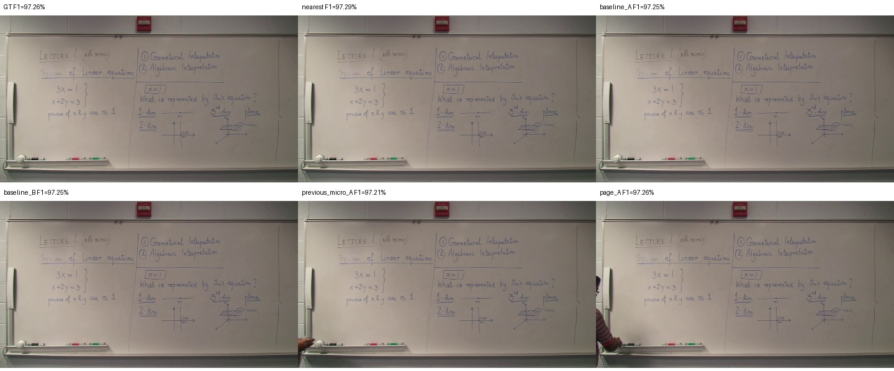
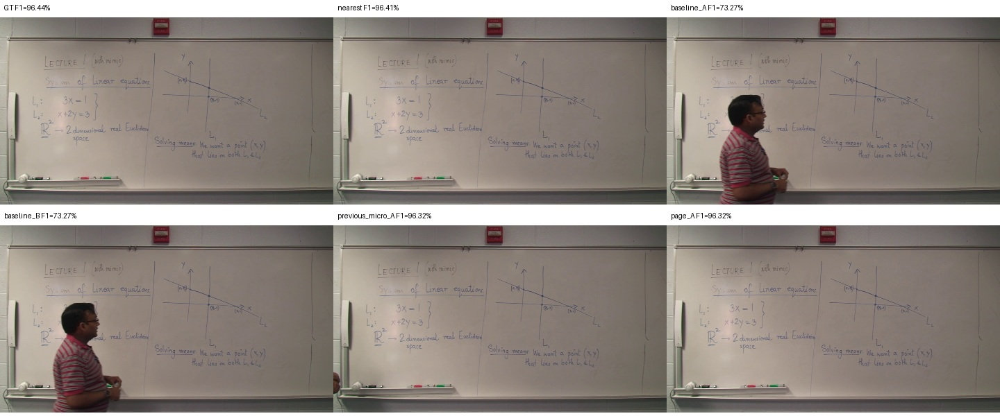
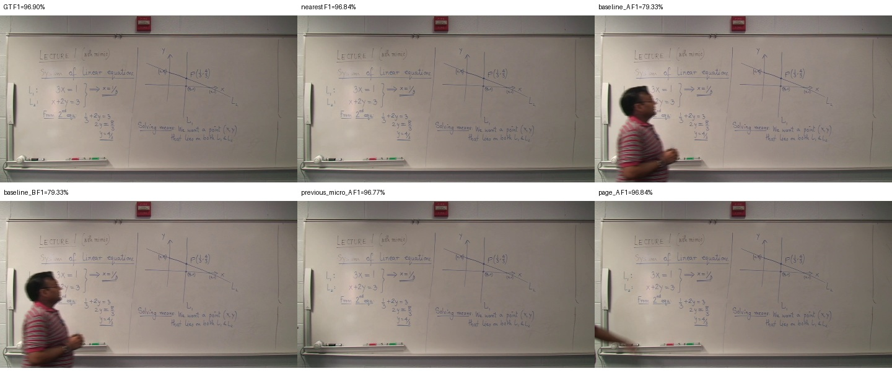

p00000 · 0.00–371.87초 · 대표 359.359초
확인된 말기 판서 노출 추정 99.9% · 경계 confirmed_erasure_or_revision · 품질 표시 ['terminal_content_uncertain']

기존 141개 중간 상태 → 누적 판서 4개. A는 원본 픽셀만 사용합니다. 이 실행에서 페이지 B는 A 원본 대체이며 복원 개선을 주장하지 않습니다.
| 출력 | Recall | Precision | F1 |
|---|---|---|---|
| GT | 99.56% | 94.32% | 96.87% |
| nearest | 99.53% | 94.30% | 96.84% |
| baseline_A | 96.42% | 74.24% | 83.28% |
| baseline_B | 96.42% | 74.24% | 83.28% |
| previous_micro_A | 99.51% | 94.17% | 96.77% |
| page_A | 99.51% | 94.25% | 96.80% |
| page_B_original_fallback | 99.51% | 94.25% | 96.80% |
기존 이진화·회수율·정밀도·F1 계산을 그대로 사용했습니다. 완성 판서는 GT 스냅샷 이후의 추가 필기를 포함할 수 있습니다. GT는 평가에만 사용했습니다.



확인된 말기 판서 노출 추정 99.9% · 경계 confirmed_erasure_or_revision · 품질 표시 ['terminal_content_uncertain']
확인된 말기 판서 노출 추정 99.9% · 경계 confirmed_erasure_or_revision · 품질 표시 []

확인된 말기 판서 노출 추정 99.9% · 경계 confirmed_erasure_or_revision · 품질 표시 []

확인된 말기 판서 노출 추정 99.8% · 경계 end_of_video · 품질 표시 []